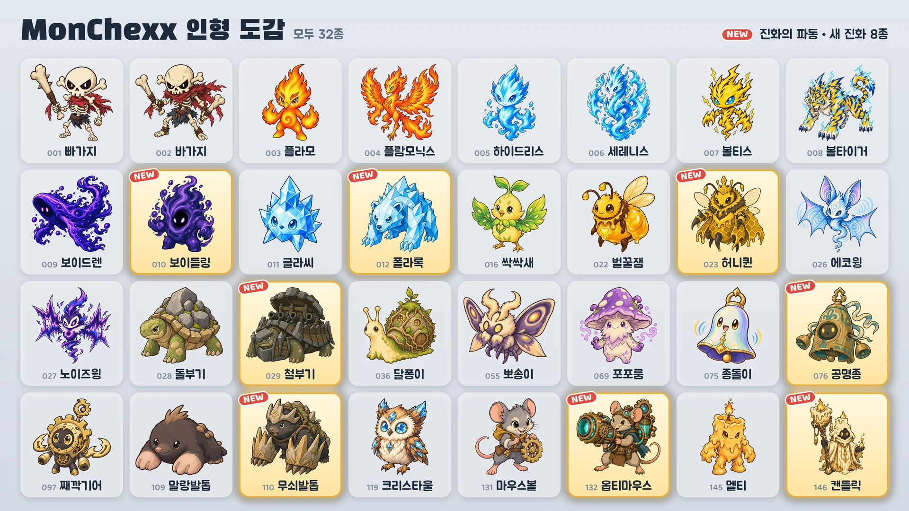

시즌 1 · 업데이트 02: 진화의 파동
10월 16일, 새 진화 8종이 추가됩니다.

새 진화 8종
- 보이들링: 보이드렌의 진화 · 탱커
- 폴라록: 글라씨의 진화 · 탱커 / 전사
- 허니퀸: 벌꿀잼의 진화 · 지원 / 원거리
- 철부기: 돌부기의 진화 · 탱커
- 공명종: 종돌이의 진화 · 탱커 / 지원
- 무쇠발톱: 말랑발톱의 진화 · 탱커 / 암살자
- 옵티마우스: 마우스볼의 진화 · 원거리
- 캔들릭: 멜티의 진화 · 지원 / 원거리
얻는 방법
- 인형뽑기 (이벤트): 이벤트 기간(10월 16일 ~ 10월 24일)에는 줄 양 끝의 두 대를 제외한 모든 기계에 새 진화 1종이 다른 인형 2종과 함께 들어갑니다. 이벤트가 끝나면 새 진화도 다른 인형과 같은 비율로 들어갑니다.
- 인형 교환소: 여분 인형 10개로 원하는 인형을(확정 교환), 3개로 무작위 인형을(랜덤 교환) 받을 수 있습니다.
- 인형 팩: 새 진화도 나옵니다.
진화 인형 사용
- 진화 인형은 따로 모으는 인형이며, 보유하면 바로 팀에 넣을 수 있습니다.
- 「경기할 팀 만들기」에서 인형을 선택하고 「기본」·「진화」로 모습을 바꿀 수 있습니다.
- 같은 진화 계보의 인형은 한 팀에 하나만 넣을 수 있습니다.
- 진화 인형의 레벨은 기본 인형과 따로 오릅니다.
새 인형
「공격력의」·「마법력의」·「최대 체력의」 수치는 레벨이 오르면 함께 커집니다.
보이들링 · 탱커 · 사거리 1칸
- 공허 흡수: 최대 체력이 마법력의 560% + 전투 시작 시 최대 체력의 6%만큼 늘어나고, 늘어난 만큼 회복합니다. 이어서 주변 1칸 적 모두에게 현재 체력의 10%만큼 마법 피해를 줍니다. 늘어난 최대 체력은 전투가 끝날 때까지 유지됩니다.
- 공허 포식: 4칸 이내의 적이 액티브 스킬을 쓸 때마다 마나를 10 얻습니다.
폴라록 · 탱커/전사 · 사거리 1칸
- 서리 내려찍기: 현재 대상에게 공격력의 820%, 주변 1칸 적에게 385%만큼 물리 피해를 주고 서리(8초간 공격 속도 15% 감소)를 겁니다. 현재 대상에게 서리가 3번 쌓이면 1.5초간 결빙되어 행동과 마나 획득이 멈춥니다.
- 수정 피부: 받는 마법 피해가 20% 감소합니다. 마법 지속 피해에도 적용됩니다.
허니퀸 · 지원/원거리 · 사거리 3칸
- 로열 젤리: 일벌 모두를 최대 체력의 100%만큼 치유하고 3초간 공격 속도를 200% 증가시킵니다. 일벌이 3마리보다 적으면 1마리를 소환합니다.
- 일벌 군단: 일벌을 최대 3마리 거느립니다. 일벌의 능력치는 허니퀸의 레벨을 따르며, 일벌은 매초 최대 체력의 4%만큼 피해를 받습니다. 허니퀸이 쓰러지면 일벌이 광폭해져 주고받는 피해가 2배가 됩니다.
철부기 · 탱커 · 사거리 1칸
- 회전 포격: 제자리에서 반시계 방향으로 돌며 대포를 6번 쏩니다. 각 포탄은 그 방향 2칸 이내의 첫 적에게 공격력의 1540%만큼 물리 피해를 줍니다. 쏘는 동안 움직이지 않고 마나가 차지 않으며, 기절하거나 결빙되면 멈춥니다.
- 요새 껍질: 주변 1칸의 적 하나마다 방어력과 마법 저항이 35씩 증가합니다.
공명종 · 탱커/지원 · 사거리 1칸
- 타종: 2칸 이내 적 모두에게 마법력의 555%만큼 마법 피해를 주고 2초간 도발합니다. 그동안 받은 기본 공격 피해(감소 전)의 35%를 2칸 이내 적 모두에게 마법 피해로 돌려줍니다.
- 공명: 2칸 이내의 다른 아군이 액티브 스킬을 쓸 때마다 마법력의 120%만큼 체력을 회복합니다.
무쇠발톱 · 탱커/암살자 · 사거리 1칸
- 땅굴 강습: 약화를 모두 해제하고 땅굴로 들어가, 주변에 적이 가장 많은 빈 칸으로 이동한 뒤 주변 1칸 적 모두에게 공격력의 740%만큼 물리 피해를 줍니다. 이동 중에는 공격받지 않습니다.
- 바위 발톱: 방어력이 공격력의 50%만큼 증가합니다.
- 마나 0으로 전투를 시작합니다.
옵티마우스 · 원거리 · 사거리 4칸
- 레이저 캐논: 1.5초간 장전한 뒤 현재 대상 방향으로 폭 1칸의 레이저를 코트 끝까지 발사해, 맞은 적 모두에게 공격력의 1210%만큼 마법 피해를 줍니다. 장전 중 기절하거나 결빙되면 취소됩니다.
- 예열 회로: 기본 공격마다 공격 속도가 15%씩 증가합니다(최대 100%). 액티브 스킬을 쓰면 초기화됩니다.
캔들릭 · 지원/원거리 · 사거리 3칸
- 꺼지지 않는 불: 체력이 가장 낮은 아군(자신 제외)에게 5초간 표식과 마법력 375%의 방패를 부여합니다. 표식을 받은 아군이 직접 피해로 쓰러질 상황이 되면, 그 피해의 200%를 캔들릭이 대신 받습니다.
- 녹는 밀랍: 받는 직접 피해가 4초에 걸쳐 나누어 체력에서 줄어듭니다.
랭크전 · 배지
- 랭크전 상대도 새 진화를 사용합니다.
- 새 진화 8종은 시즌 1 컬렉션 배지에 포함되지 않습니다.
- 진화 박사 배지는 서로 다른 진화 인형 5종을 보유하면 받을 수 있습니다. 진화 인형은 이제 13종입니다.
모든 인형의 밸런스 변경은 「밸런스 · 전투 시스템」 패치 노트에서 확인할 수 있습니다.